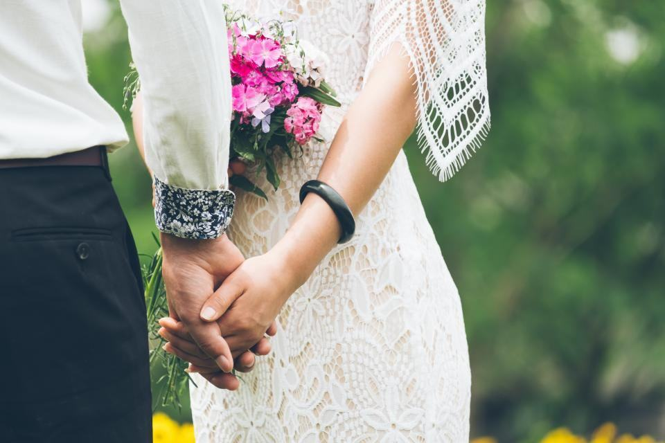

Referenser
Ett urval av uppdrag vi har utfört.
- 2025

Minnesfilm om en surfare
Fyrtio år av VHS-band från stranden blev en film på åtta minuter som visades i kapellet.
- 2025

Jordfästning i S:t Nikolai
En lärare i 38 år – minnestalet byggde på brev från före detta elever.
- 2025

Minnesbok om en lantbrukare
Sextio sidor om ett liv på gården, med dagboksanteckningar från 1950-talet.
- 2024

Livsintervju på boendet
Fyra samtal med en 96-årig sjuksköterska som tjänstgjort i Korea på 1950-talet.
- 2024

Borgerlig ceremoni vid Nissan
Tre barnbarn läste var sin del av ett tal vi skrivit tillsammans med dem.
- 2026

Digitalisering av smalfilm
Tjugo rullar Super 8 från pappersbruket överförs inför en minnesstund i höst.
Familjer som fick orden
”Annelie pratade med oss i två timmar och skrev sedan ett tal där pappa kändes levande. Folk skrattade högt i kyrkan.”
Mikael J. · Falkenberg”Filmen med farmors smalfilmer från 1960-talet har vi sett hundra gånger. Barnbarnen har aldrig sett henne så ung.”
Susanne K. · Laholm”Mamma gjorde en livsintervju året innan hon dog. Nu har vi hennes röst och hennes egna ord i en bok.”